Aldoria Croisades — images (211)
actions
 actions/bataille.jpg
actions/bataille.jpg actions/duel.jpg
actions/duel.jpg actions/hopital.jpg
actions/hopital.jpg actions/patrouille.jpg
actions/patrouille.jpg actions/pillage.jpg
actions/pillage.jpg actions/travail.jpg
actions/travail.jpgbg
 bg/camp.jpg
bg/camp.jpg bg/title.jpg
bg/title.jpgenemies
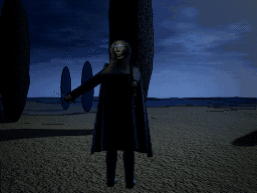
enemies/assassin.jpg enemies/brigand.jpg
enemies/brigand.jpg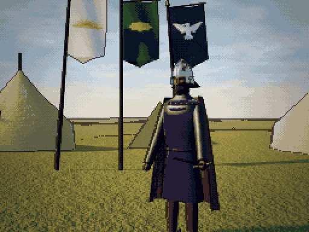
enemies/capitaine-mercenaire.jpg enemies/champion.jpg
enemies/champion.jpg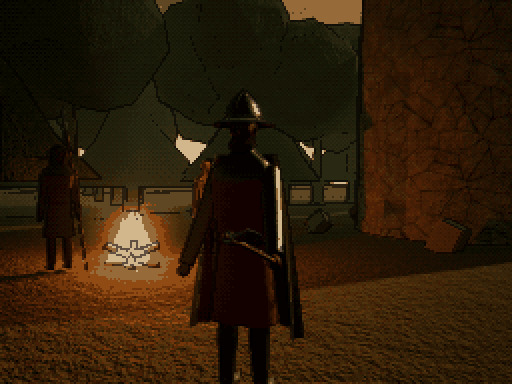
enemies/chef-brigand.jpg enemies/chevalier-noir.jpg
enemies/chevalier-noir.jpg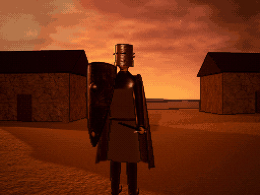
enemies/chevalier-renegat.jpg enemies/deserteur.jpg
enemies/deserteur.jpg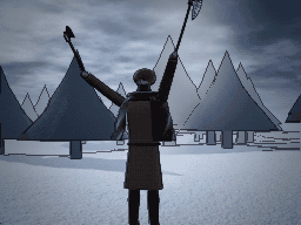
enemies/fou-de-guerre.jpg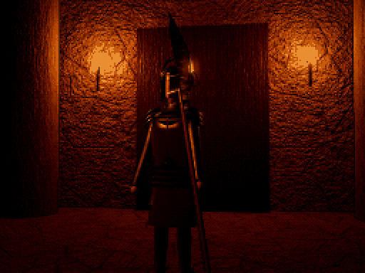
enemies/garde-du-tyran.jpg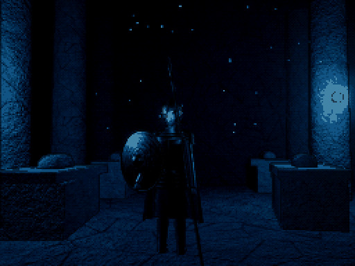
enemies/gardien-des-tombeaux.jpg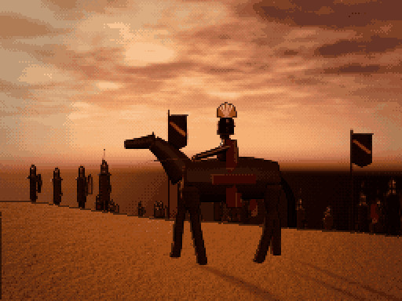
enemies/general-renegat.jpg enemies/loup.jpg
enemies/loup.jpg enemies/mercenaire.jpg
enemies/mercenaire.jpg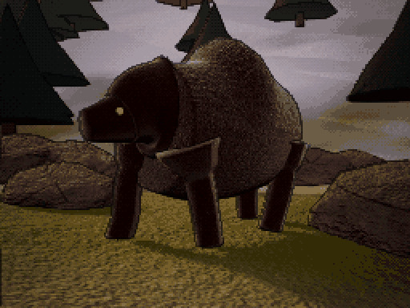
enemies/ours.jpg enemies/pillard.jpg
enemies/pillard.jpg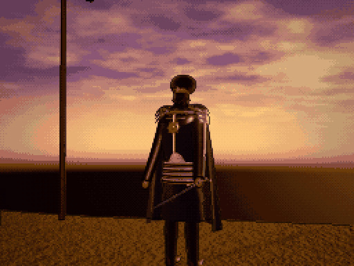
enemies/roi-sans-couronne.jpg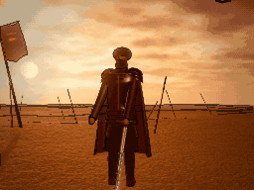
enemies/seigneur-dechu.jpg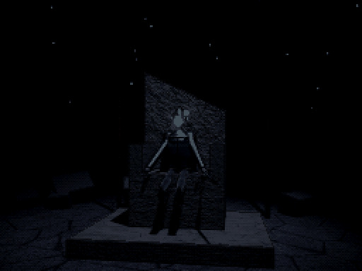
enemies/seigneur-des-ruines.jpg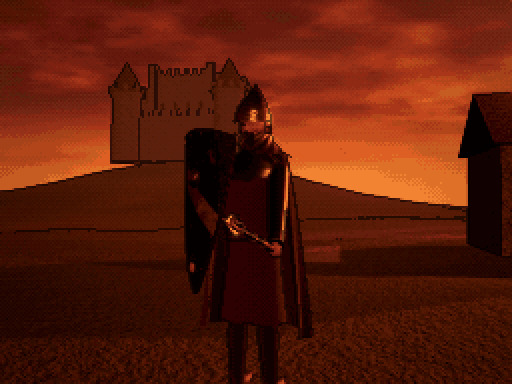
enemies/seigneur-pillard.jpgfactions
 factions/aube.png
factions/aube.png factions/givre.png
factions/givre.png factions/sables.png
factions/sables.pngicons
 icons/icon-192.png
icons/icon-192.png icons/icon-512.png
icons/icon-512.pngitems
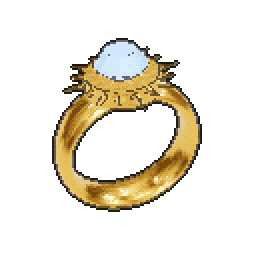
items/anneau-d-aldoria.png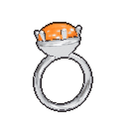
items/anneau-d-ambre.png items/anneau-d-argent.png
items/anneau-d-argent.png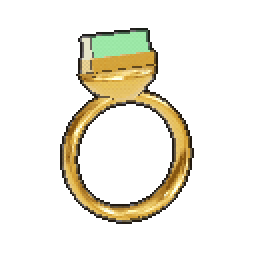
items/anneau-d-emeraude.png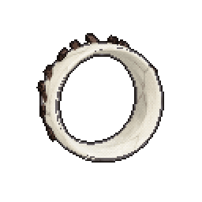
items/anneau-d-os.png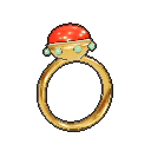
items/anneau-de-cornaline.png items/anneau-de-cuivre.png
items/anneau-de-cuivre.png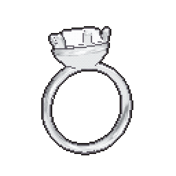
items/anneau-de-diamant.png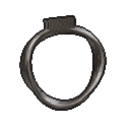
items/anneau-de-fer.png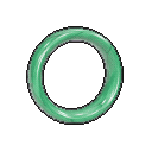
items/anneau-de-jade.png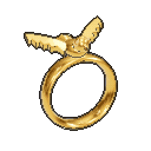
items/anneau-de-l-aigle.png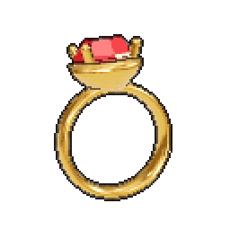
items/anneau-de-rubis.png items/anneau-de-saphir.png
items/anneau-de-saphir.png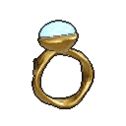
items/anneau-des-ruines.png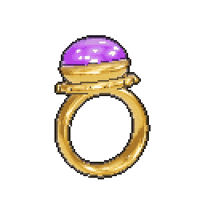
items/anneau-du-chancelier.png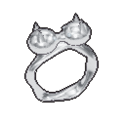
items/anneau-du-loup.png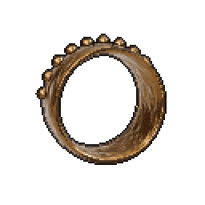
items/anneau-du-veteran.png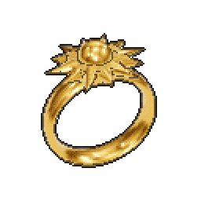
items/anneau-solaire.png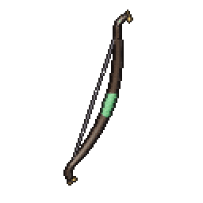
items/arc-composite.png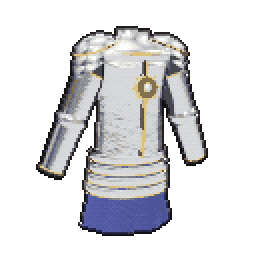
items/armure-d-aldoria.png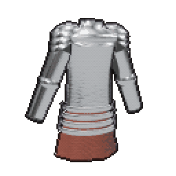
items/armure-de-plates.png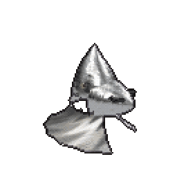
items/bassinet.png items/baton-ferre.png
items/baton-ferre.png items/bonnet-de-cuir.png
items/bonnet-de-cuir.png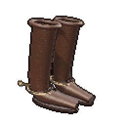
items/bottes-a-eperons.png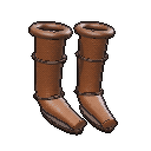
items/bottes-de-campagne.png items/bottes-de-cavalier.png
items/bottes-de-cavalier.png items/bottes-de-cuir.png
items/bottes-de-cuir.png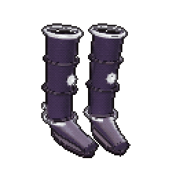
items/bottes-de-l-errant.png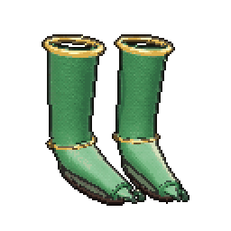
items/bottes-du-coureur.png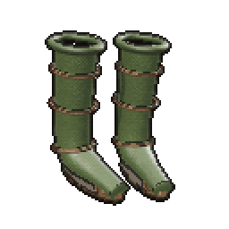
items/bottes-du-pelerin.png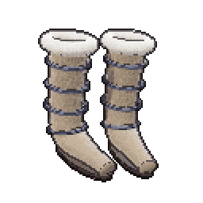
items/bottes-du-traqueur.png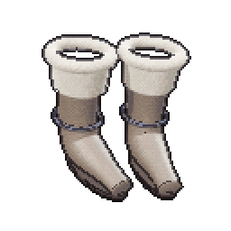
items/bottes-fourrees.png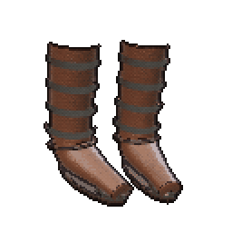
items/bottes-renforcees.png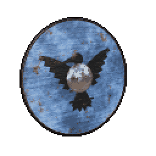
items/bouclier-au-corbeau.png items/bouclier-cercle.png
items/bouclier-cercle.png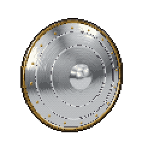
items/bouclier-d-acier.png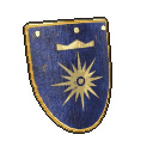
items/bouclier-d-aldoria.png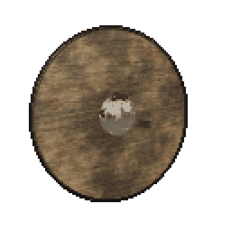
items/bouclier-de-bataille.png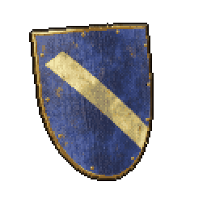
items/bouclier-de-cavalier.png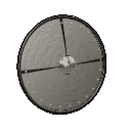
items/bouclier-de-fer.png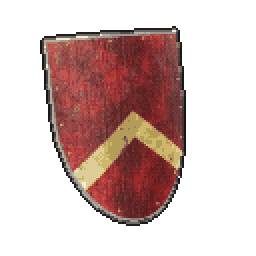
items/bouclier-de-la-garde.png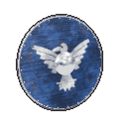
items/bouclier-du-jarl.png items/bouclier-rond.png
items/bouclier-rond.png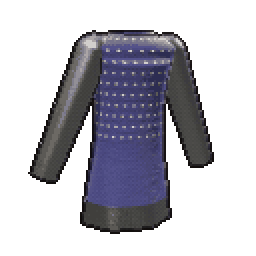
items/brigandine.png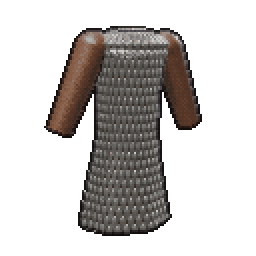
items/broigne-a-ecailles.png items/broigne.pngitems/camail-double.png
items/broigne.pngitems/camail-double.png items/camail.pngitems/casque-a-aventail.pngitems/casque-a-masque.png
items/camail.pngitems/casque-a-aventail.pngitems/casque-a-masque.png items/casque-a-nasal.pngitems/casque-a-turban.pngitems/casque-de-guet.pngitems/casque-de-l-emir.pngitems/casque-de-sergent.pngitems/casque-de-veteran.pngitems/casque-du-jarl.pngitems/casque-du-nord.pngitems/chapel-de-fer.png
items/casque-a-nasal.pngitems/casque-a-turban.pngitems/casque-de-guet.pngitems/casque-de-l-emir.pngitems/casque-de-sergent.pngitems/casque-de-veteran.pngitems/casque-du-jarl.pngitems/casque-du-nord.pngitems/chapel-de-fer.png items/chausses-de-laine.png
items/chausses-de-laine.png items/chausses-de-mailles.pngitems/chausses-doublees.png
items/chausses-de-mailles.pngitems/chausses-doublees.png items/chevaliere-d-or.pngitems/cimeterre.png
items/chevaliere-d-or.pngitems/cimeterre.png items/cotte-courte.pngitems/cotte-de-plates.pngitems/cotte-des-clans.pngitems/cotte-des-rois.pngitems/couronne-de-fer.png
items/cotte-courte.pngitems/cotte-de-plates.pngitems/cotte-des-clans.pngitems/cotte-des-rois.pngitems/couronne-de-fer.png items/dague.png
items/dague.png items/ecu-au-lion.pngitems/ecu-blasonne.pngitems/ecu-de-l-ost.pngitems/ecu-du-seneschal.png
items/ecu-au-lion.pngitems/ecu-blasonne.pngitems/ecu-de-l-ost.pngitems/ecu-du-seneschal.png items/ecu-en-amande.pngitems/egide-des-ruines.pngitems/epee-batarde.pngitems/epee-d-aldoria.png
items/ecu-en-amande.pngitems/egide-des-ruines.pngitems/epee-batarde.pngitems/epee-d-aldoria.png items/epee-damasquinee.pngitems/epee-de-guerre.pngitems/epee-de-l-aube.png
items/epee-damasquinee.pngitems/epee-de-guerre.pngitems/epee-de-l-aube.png items/epee-du-maitre.pngitems/epee-longue-trempee.png
items/epee-du-maitre.pngitems/epee-longue-trempee.png items/epee-normande.pngitems/epieu-de-chasse.pngitems/fauchon.pngitems/fleau-d-armes.pngitems/francisque.png
items/epee-normande.pngitems/epieu-de-chasse.pngitems/fauchon.pngitems/fleau-d-armes.pngitems/francisque.png items/gambison.pngitems/grand-heaume.pngitems/grand-pavois.pngitems/greves-d-acier.pngitems/greves-de-maitre.pngitems/guetres-de-cuir.pngitems/guisarme.pngitems/hache-barbue.png
items/gambison.pngitems/grand-heaume.pngitems/grand-pavois.pngitems/greves-d-acier.pngitems/greves-de-maitre.pngitems/guetres-de-cuir.pngitems/guisarme.pngitems/hache-barbue.png items/hache-danoise.pngitems/hache-de-bataille.pngitems/hache-du-dernier-hiver.pngitems/hache-du-jarl.pngitems/haubert-blasonne.pngitems/haubert-de-bataille.pngitems/haubert-de-maitre.pngitems/haubert-double.png
items/hache-danoise.pngitems/hache-de-bataille.pngitems/hache-du-dernier-hiver.pngitems/hache-du-jarl.pngitems/haubert-blasonne.pngitems/haubert-de-bataille.pngitems/haubert-de-maitre.pngitems/haubert-double.png items/haubert.pngitems/heaume-a-cimier.png
items/haubert.pngitems/heaume-a-cimier.png items/heaume-a-lunettes.pngitems/heaume-cylindrique.pngitems/heaume-d-aldoria.pngitems/heaume-du-commandeur.pngitems/jambieres-de-fer.pngitems/jaque-de-cuir.png
items/heaume-a-lunettes.pngitems/heaume-cylindrique.pngitems/heaume-d-aldoria.pngitems/heaume-du-commandeur.pngitems/jambieres-de-fer.pngitems/jaque-de-cuir.png items/jaseran.pngitems/kazaghand.pngitems/lame-de-l-aurore.pngitems/lamellaire-lourde.pngitems/lamellaire.pngitems/lance-de-cavalerie.pngitems/lance-du-connetable.png
items/jaseran.pngitems/kazaghand.pngitems/lame-de-l-aurore.pngitems/lamellaire-lourde.pngitems/lamellaire.pngitems/lance-de-cavalerie.pngitems/lance-du-connetable.png items/lance.pngitems/manteau-de-loup.pngitems/marteau-de-guerre.png
items/lance.pngitems/manteau-de-loup.pngitems/marteau-de-guerre.png items/masse-d-armes.pngitems/masse-de-l-ost.pngitems/massue-cloutee.pngitems/pavois-de-siege.pngitems/pavois.pngitems/rondache.pngitems/sabre-de-l-emir.pngitems/sandales-de-marche.pngitems/sceau-du-capitaine.pngitems/solerets-d-aldoria.pngitems/solerets.png
items/masse-d-armes.pngitems/masse-de-l-ost.pngitems/massue-cloutee.pngitems/pavois-de-siege.pngitems/pavois.pngitems/rondache.pngitems/sabre-de-l-emir.pngitems/sandales-de-marche.pngitems/sceau-du-capitaine.pngitems/solerets-d-aldoria.pngitems/solerets.png items/spangenhelm.pngitems/surcot-de-l-ordre.pngitems/targe-a-pointe.pngitems/targe-damasquinee.png
items/spangenhelm.pngitems/surcot-de-l-ordre.pngitems/targe-a-pointe.pngitems/targe-damasquinee.png items/targe-de-cuir.png
items/targe-de-cuir.pngjobs
 jobs/ambassade.jpg
jobs/ambassade.jpg jobs/brigands.jpg
jobs/brigands.jpg jobs/bucheron.jpg
jobs/bucheron.jpg jobs/caravane.jpgjobs/cavalerie.jpgjobs/chantier.jpgjobs/conseil.jpgjobs/convoi.jpg
jobs/caravane.jpgjobs/cavalerie.jpgjobs/chantier.jpgjobs/conseil.jpgjobs/convoi.jpg jobs/eclaireur.jpgjobs/espion.jpg
jobs/eclaireur.jpgjobs/espion.jpg jobs/forge.jpgjobs/frontiere.jpgjobs/maitre-d-armes.jpg
jobs/forge.jpgjobs/frontiere.jpgjobs/maitre-d-armes.jpg jobs/pelerins.jpgjobs/percepteur.jpg
jobs/pelerins.jpgjobs/percepteur.jpg jobs/recrues.jpg
jobs/recrues.jpg jobs/remparts.jpgjobs/ruines.jpgjobs/siege.jpg
jobs/remparts.jpgjobs/ruines.jpgjobs/siege.jpg jobs/troupeaux.jpg
jobs/troupeaux.jpgracine
 logo.png
logo.pngmap
 map/aldoria-small.jpg
map/aldoria-small.jpg map/aldoria.jpg
map/aldoria.jpgportraits
 portraits/aube-1.jpg
portraits/aube-1.jpg portraits/aube-2.jpg
portraits/aube-2.jpg portraits/aube-3.jpg
portraits/aube-3.jpg portraits/aube-4.jpg
portraits/aube-4.jpg portraits/givre-1.jpg
portraits/givre-1.jpg portraits/givre-2.jpg
portraits/givre-2.jpg portraits/givre-3.jpg
portraits/givre-3.jpg portraits/givre-4.jpg
portraits/givre-4.jpg portraits/sables-1.jpg
portraits/sables-1.jpg portraits/sables-2.jpg
portraits/sables-2.jpg portraits/sables-3.jpg
portraits/sables-3.jpg portraits/sables-4.jpg
portraits/sables-4.jpgui
 ui/leather.jpg
ui/leather.jpg ui/parchment.jpg
ui/parchment.jpg ui/stone.jpg
ui/stone.jpg ui/wood.jpg
ui/wood.jpg